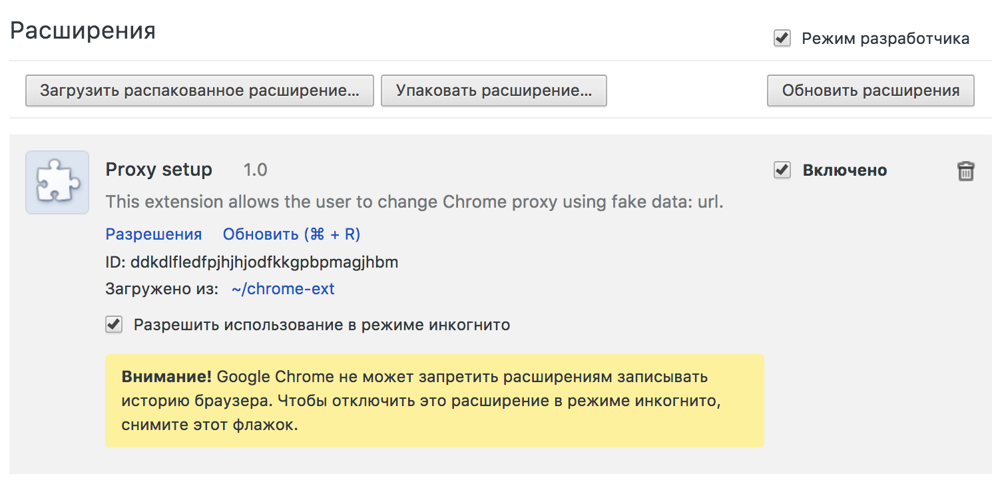

I like to use Chrome for web application security research. Profiles simplify a number of tests. However, there is a problem: Chrome does not allow you to set proxy and relies on the system settings.
You either use third-party extensions or third-party software.
So I decided to write my own extension, which turned out to be more convenient than the ones that were available.
Documentation. Those who are not familiar with the extension development must proceed through the steps listed below:
- Create a folder containing the manifest and extension files
- Еnable developer mode in your browser settings
- Load the unpacked extension and allow it to be used in incognito mode

This extension contains several files:
- icon.png
- manifest.json
- popup.html
- popup.js
The core funtion is implemented in the ‘popup.js’ file:
var proxyConfig = {
mode: "fixed_servers",
rules: {
singleProxy: {
host: "127.0.0.1",
port: 8080
},
bypassList: []
}
};
chrome.proxy.settings.set(
{
value: proxyConfig, scope: 'incognito_session_only'
}, function() {});Unlike the extensions available on the internet, this simple code allows you to set the scope of the proxy to ‘incognito_session_only’.
The project is available in my github repository.